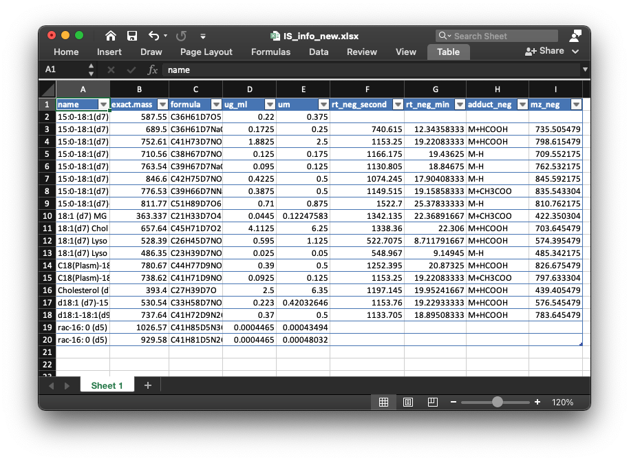

Example of lipid absolute quantification
Xiaotao Shen PhD (https://www.shenxt.info/)
Chuchu wang PhD
School of Medicine, Stanford UniversityCreated on 2021-02-09 and updated on 2021-03-01
Source:vignettes/one_step_of_lipidflow.Rmd
one_step_of_lipidflow.Rmd
Demo data to show how to use lipidflow
Here we use the demo data in lipidflow to show how to use it for lipid absolute quantification.
Organize the demo data
First, we need to get the demo dataset.
library(lipidflow)
library(tidyverse)
pos_data = system.file("POS", package = "lipidflow")
neg_data = system.file("NEG", package = "lipidflow")
path = file.path(".", "example")
dir.create(path)
file.copy(from = pos_data, to = path, recursive = TRUE, overwrite = TRUE)
file.copy(from = neg_data, to = path, recursive = TRUE, overwrite = TRUE)Now there will be a example folder in your work directory. And in the example folder, there are two folders: POS and NEG. The are two groups for each mode: “D25” and “M19”. And each group has two repeats.

Next, we should set the match list between internal standards and lipid class.
- Positive mode:
match_item_pos =
list(
"Cer" = "d18:1 (d7)-15:0 Cer",
"ChE" = c("18:1(d7) Chol Ester", "Cholesterol (d7)"),
"Chol" = "Cholesterol (d7)",
"DG" = "15:0-18:1(d7) DAG",
"LPC" = "18:1(d7) Lyso PC",
"LPE" = "18:1(d7) Lyso PE",
"MG" = "18:1 (d7) MG",
"PA" = "15:0-18:1(d7) PA (Na Salt)",
"PC" = "15:0-18:1(d7) PC",
"PE" = "15:0-18:1(d7) PE",
"PG" = "15:0-18:1(d7) PG (Na Salt)",
"PI" = "15:0-18:1(d7) PI (NH4 Salt)",
"PPE" = "C18(Plasm)-18:1(d9) PE",
"PS" = "15:0-18:1(d7) PS (Na Salt)",
"SM" = "d18:1-18:1(d9) SM",
"TG" = "15:0-18:1(d7)-15:0 TAG"
)- Negative mode:
match_item_neg =
list(
"Cer" = "d18:1 (d7)-15:0 Cer",
"Chol" = "Cholesterol (d7)",
"ChE" = c("18:1(d7) Chol Ester", "Cholesterol (d7)"),
"LPC" = "18:1(d7) Lyso PC",
"LPE" = "18:1(d7) Lyso PE",
"PC" = "15:0-18:1(d7) PC",
"PE" = "15:0-18:1(d7) PE",
"PG" = "15:0-18:1(d7) PG (Na Salt)",
"PI" = "15:0-18:1(d7) PI (NH4 Salt)",
"PPE" = "C18(Plasm)-18:1(d9) PE",
"PS" = "15:0-18:1(d7) PS (Na Salt)",
"SM" = "d18:1-18:1(d9) SM"
)
Run get_lipid_absolute_quantification() function
Then we run get_lipid_absolute_quantification() function. Please note that path need to set as example.
get_lipid_absolute_quantification(
path = "example",
is_info_name_pos = "IS_information.xlsx",
is_info_name_neg = "IS_information.xlsx",
use_manual_is_info = FALSE,
lipid_annotation_table_pos = "lipid_annotation_table_pos.xlsx",
lipid_annotation_table_neg = "lipid_annotation_table_neg.xlsx",
output_eic = TRUE,
ppm = 40,
rt.tolerance = 180,
threads = 3,
rerun = FALSE,
which_group_for_rt_confirm = "D25",
match_item_pos = match_item_pos,
match_item_neg = match_item_neg
)Output result
Most of the results are outputted in the example/Result, some results are in example/POS and example/NEG.
Information of internal standards
Here we set which_group_for_rt_confirm as “D25”, so this group samples will be used to extract internal standards and get the information of all internal standards.
The retention times of all internal standards are generated automatically, and outputted as IS_info_pos.xlsx in “example/POS” and IS_info_neg.xlsx in “example/NEG”, respectively.
 We can see that lipidflow added the rt_neg_second, rt_neg_min, adduct_neg and mz_neg in the IS_info_new.xlsx. If there are no good EICs, no information for these internal standards.
Sometimes the information of internal standards maybe not correct, so you can open the EICs of each internal standard and then check the RTs and then put correct information in your IS information table. The EICs for each internal standard is in the example/POS/Result/peak_shape folder.

One example is like below figure shows:
This is the EIC of 15_0-18_1(d7) PA (Na Salt) with M+H. We can see that this internal 15_0-18_1(d7) PA (Na Salt) has good peak shape and the retention time is around 800 second.
If you find information of some internal standards are not correct, you can put the right information in IS_info_new.xlsx in positive and negativePOSandNEGfolders, respectively. And then rerun theget_lipid_absolute_quantification()function, and setis_info_name_posandis_info_name_negasIS_info_new.xlsx, anduse_manual_is_infoasTRUE, thenlipidflow` will use the modified information table for next processing.